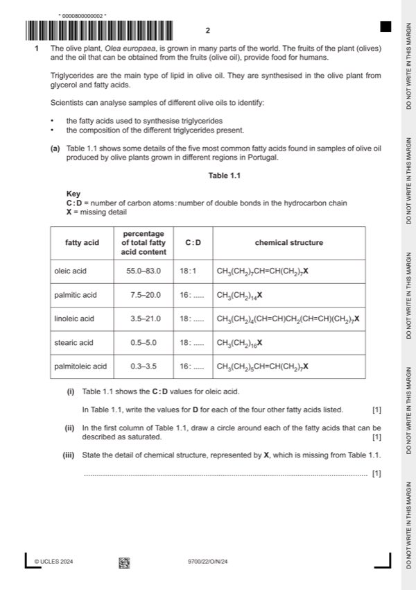

Question 1

Original paper page 2
Part 1(a)(i) — solution
all correct for one mark ; 1
palmitic acid 0
linoleic acid 2
stearic acid 0
palmitoleic acid 1
Mark points
- Include the ideas shown in the solution above.
Part 1(a)(ii) — solution
circle drawn around palmitic acid and around stearic acid ; 1
Mark points
- Include the ideas shown in the solution above.
Part 1(a)(iii) — solution
COOH / carboxyl (group) / carboxylic acid (group) ; 1
A carbonyl group and hydroxyl group
R if response includes incorrect groups
University Press & Assessment 2024 Page 5 of 21
9700/22 Cambridge International AS & A Level – Mark Scheme October/November 2024
Mark points
- Include the ideas shown in the solution above.
Part 1(a)(iv) — solution
if no ref. to fatty acids, allow one mark for (some) triglycerides may, be saturated / have no double bonds (in hydrocarbon 2
chain,) and (some) may, be unsaturated / have double bonds
I ‘tails’
any two from:
Mark points
- Include the ideas shown in the solution above.
Part 1 — solution
each triglyceride has three fatty acids ;
Mark points
- Include the ideas shown in the solution above.
Part 1(b) — solution
any two from: 2
Mark points
- Include the ideas shown in the solution above.
Part 1 — solution
water is, a polar molecule / polar / dipolar ;
A water is a dipole
A description e.g. the O atom (of water) has, a slightly negative / –, charge, and the H atoms have a slightly
positive / +, charge
Mark points
- Include the ideas shown in the solution above.
Part 1(c) — solution
(phloem) sieve tube element ; (question asks for type of cell) 1
A sieve element
University Press & Assessment 2024 Page 7 of 21
9700/22 Cambridge International AS & A Level – Mark Scheme October/November 2024
Mark points
- Include the ideas shown in the solution above.
Part 1 — solution
gpA / (P. jirovecii) glycoprotein, binds to a, receptor / protein / glycoprotein on (surface of) alveolar cell
or
gpA binds to ECM, protein / glycoprotein ; I receptor
A idea that ECM proteins are on, surface of / interacting with, (cell surface membrane of) alveolar cells
or
receptor / protein / glycoprotein on (surface of) alveolar cell is a binding site (for gpA) A same idea for ECM
Mark points
- Include the ideas shown in the solution above.
Part 1 — solution
alveolar cells / ECM, hindered / surrounded by / AW, P. jirovecii cells ;
A alveolar wall becomes, thicker / AW
Mark points
- Include the ideas shown in the solution above.
Part 1 — solution
idea that, next stage / after thymus, is (T-lymphocyte) release into general circulation / blood ;
Mark points
- Include the ideas shown in the solution above.
Part 1 — solution
affinity of haemoglobin for oxygen, decreases / AW ;
context is infection so R in presence of carbon dioxide
Mark points
- Include the ideas shown in the solution above.
Part 1 — solution
(diameter / width) 6–8 m so able to pass through (lumen of) capillaries ;
I small size
Mark points
- Include the ideas shown in the solution above.
Part 1 — solution
cell wall, pathway / route / AW ;
R crossing membranes / passing through vacuoles / passing through cytoplasm, in context of passage to endodermis
I diffuses / osmosis / active transport
Mark points
- Include the ideas shown in the solution above.